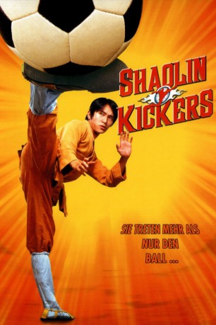

gesehen am 02.08.2017
gesehen am 02.08.2017Alternativ: Shaolin Soccer (Englischer Titel) gesehen am 02.08.2017
 
 IMDB-Wertung: 7.3 / 10
IMDB-Wertung: 7.3 / 10  Metascore:
Metascore: 
Einst war „Golden Leg“ Fung (Man Tat Ng) ein heller Stern am Fußballhimmel, bis er sich der Korruption hat hingeben lassen und damit alles verloren hat, was ihm wichtig war. Nach dem glanzlosen Ende seiner Fußballkarriere zog auch sein privates Leben einen turbulenten Abstieg hinter sich her. Nun, viele Jahre später, trifft er auf den jungen Mönch Sing (Stephen Chow), der verzweifelt versucht, die Sportart des Kung-Fu wieder populär in den Vordergrund zu bringen. Fung hat dabei die geniale Idee – die Verbindung von Kung-Fu mit dem Fußballsport. Mit der Hilfe von Sings Mönch-Brüder ist schnell eine Mannschaft aufgestellt, die durch ihre unkonventionelle Spielweise und Akrobatik sowohl das Publikum begeistert, als auch ein Spiel nach dem anderen gewinnt. Bis sie bei einem großen Turnier im Finale auf das „Evil Team“ stoßen, in dem unliebsame alte Bekannte von Fug zugange sind, wodurch ihn seine Vergangenheit wieder einholt…
Jahr: 2001
Dauer: 112 Minuten
FSK: 12
Land: Hong-Kong Studio: Buena Vista InternationalTonspuren:
Untertitel:
Auflösung: SD (800x448) Größe: 2048 MB
Regisseur:  Stephen Chow
Stephen Chow
Drehbuch: Stephen Chow
Soundtrack:
Darsteller:
 Stephen Chow als Mighty Steel Leg Sing
Stephen Chow als Mighty Steel Leg Sing Kai Man Tin als Iron Shirt Tin, Third Brother
Kai Man Tin als Iron Shirt Tin, Third Brother Stephen Apostolina als Announcer #2
Stephen Apostolina als Announcer #2 Richard Cansino als Hotel Guy
Richard Cansino als Hotel Guy Elisa Gabrielli als Team Moustache Players
Elisa Gabrielli als Team Moustache Players Richard Steven Horvitz als Team Gangster Leader
Richard Steven Horvitz als Team Gangster Leader Bai Ling als Mui
Bai Ling als Mui Skip Stellrecht als Lift Man
Skip Stellrecht als Lift Man Kirk Thornton als Announcer #1 / Coach Hung
Kirk Thornton als Announcer #1 / Coach Hung Brian Tochi als Mighty Steel Leg Sing
Brian Tochi als Mighty Steel Leg Sing Ping Wu als Bulldog
Ping Wu als Bulldog Ron Yuan als Referee
Ron Yuan als Referee Nicholas Tse als Young Hung , uncredited
Nicholas Tse als Young Hung , uncreditedDatei: X:\HD-Eastern-Modern(N-Z)\Shaolin Kickers (2001, FSK12, 800x448).mp4 seit 31.07.2017
Festplatte: HD Eastern+Western
 Es gibt insgesamt 76 Filme in der Gruppe 'HD-Eastern-Modern(N-Z)'
Es gibt insgesamt 76 Filme in der Gruppe 'HD-Eastern-Modern(N-Z)'